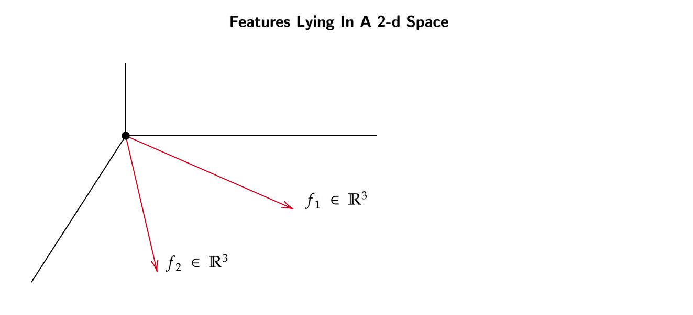
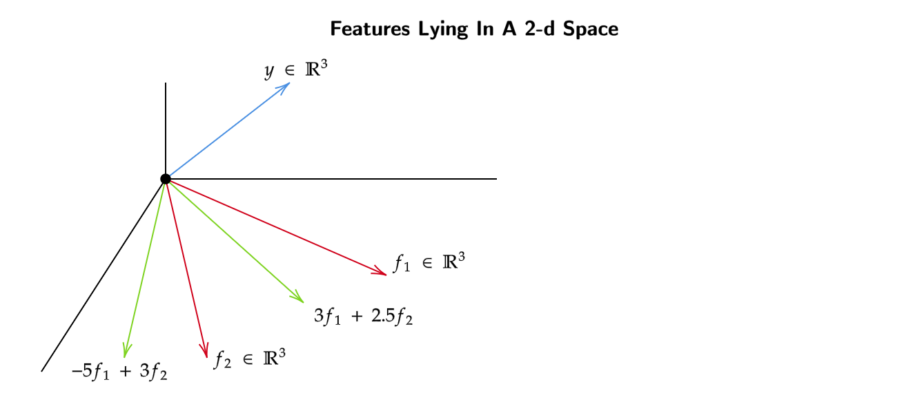
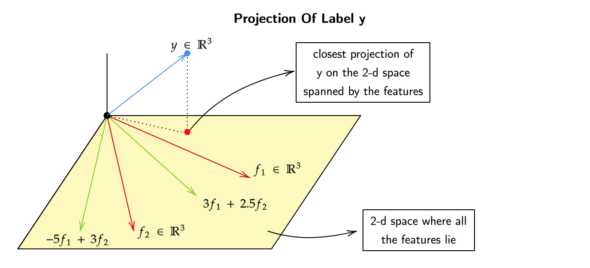
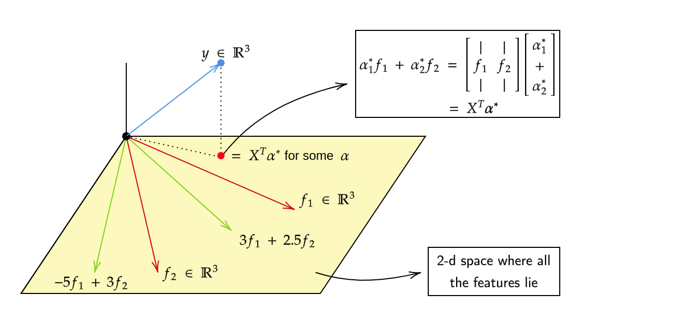
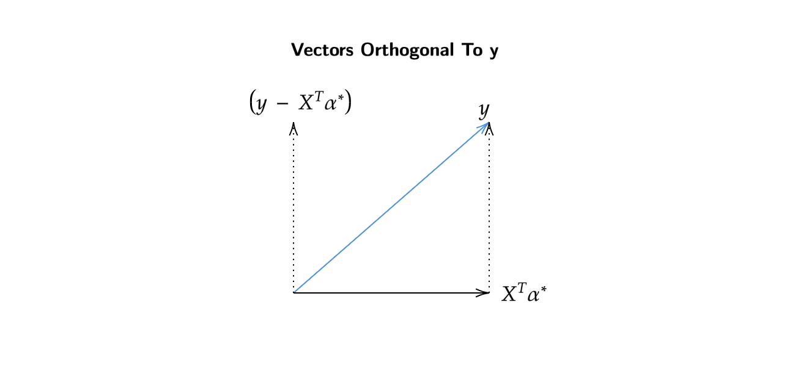
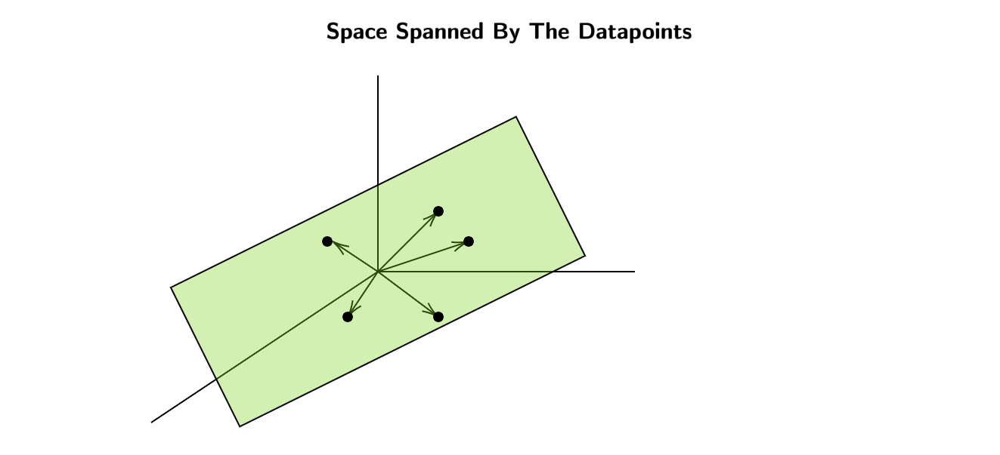
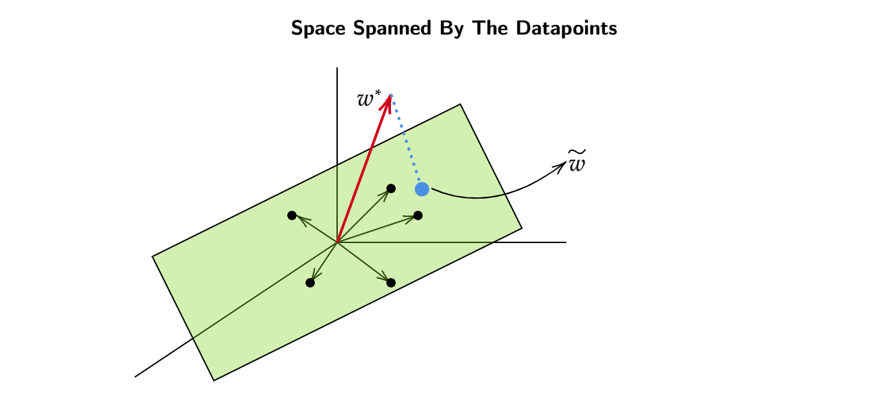

Supervised Learning
For a bunch of datapoints \(\{x_1 , x_2 , .... x_n \} \;\;\;\; x_i \in \mathbb{R}^d\) are called features/attributes and \(\{y_1 , y_2 , .... y_n \}\) corresponding to the datapoints are called the labels. These labels provide "supervision" for our algorithms.
These labels can take different types of values
- Binary Classification: Where the labels take only two values and they come from \(\{+1 , -1 \}\).
- Multiclass Classification : Where the labels take multiples values/classes from a set like \(\{0,1,2,.....9 \}\).
Linear Regression
For input/training data \(\{x_1 , x_2 , .... x_n \} \;\;\;\; x_i \in \mathbb{R}^d\) our goal is to learn a function \(h : \mathbb{R}^d \to \mathbb{R}\) which converts a feature to a label.
There are many functions which map \(\mathbb{R}^d \to \mathbb{R}\) , so how do we measure the "goodness" of a function?
To measure the error of a function
In the best case scenario , how small can this error be?
0 is the least value the error function can take and it only happens when \(h(x_i) = y_i \forall i\)
However this \(h(x)\) may not always be the best function for the mapping
Some of the problems with \(h(x)\) are
- To achieve 0 error , we always output the same label for each feature , this \(h(x)\) "memorizes" the mapping from \(\mathbb{R}^d\) to \(\mathbb{R}\) and this function may not always be useful. Functions like this tend to overfit the training data and produce considerable errors on testing data.
How to prevent overfitting of training data?
Our goal now is to use the same squared error function , but impose a certain structure to reduce our search space.
One of the simplest structures we could impose is a linear structure.

Now our modified goal is
or equivalently
Optimizing the Error Function
Now that we have identified a function for our algorithm , we should think of a way to optimize this function
The above function can be rewritten as follows
The above equation is an unconstrained optimization problem , to minimize the equation we will now take the derivative and equate it to zero.
Geometric Interpretation of Linear Regression
Lets say for a dataset with number of features to be 2 (\(d=2\)) and number of points be 3 (\(n=3\)).
How can we interpret \(w^* = (XX^T)^\dagger(Xy)\) geometrically?
Now if we draw an \(n\) dimensional space , in our case its \(n =3\), the first vector that we will have will be in \(\mathbb{R}^3\) and the other vector also in \(\mathbb{R}^3\).

Note that we are not plotting the the datapoints but the features themselves.
Now we plot the label in the same \(\mathbb{R}^3\) subspace. 
We can see that the linear combinations of the features (green vectors) will lie in the same plane as the features themselves.
Now if we also plot the label vector (\(y\)) onto the same \(\mathbb{R}^3\) subspace , it may or may not lie in the same plane as of the features themselves.
In the case it does not lie in the plane spanned by the features , we will find the closest projection of \(y\) onto the plane.

We also know that the red point will also be a linear combination of the features as it lies in the same plane as of the features themselves.
So for some real numbers like \(\alpha^*_1 , \alpha^*_2\) , the red point can be expressed as the linear combination of features (\(\alpha^*_1f_1 + \alpha^*_2f_2\))

We also know that \(X^T\alpha^*\) and \(y - X^T \alpha^*\) are orthogonal to each other.

Now what happens if we put \(w^* = \alpha^*\) , where \(w^* = {(XX^T)}^\dagger Xy\)
The new equation will be,
With this equation we basically prove that the solution \(\alpha^*\) we were looking for is the same as \(w^*\)
Gradient Descent
We know that \(w^*\) has a closed form solution which is \(w^* = (XX^T)^\dagger Xy\), but it is computationally expensive to compute \(w^*\) as it takes \(O(d^3)\) iterations. Also, solving for \(w^*\) is an unconstrained optimization problem , which can be solved using the method of Gradient Descent.
Gradient Descent is an iterative way to find minimizers of functions using just first order information , which is gradient of the function (vector of partial derivatives).
The gradient tells you the direction where function will increase , instead , when doing gradient descent we move opposite to the direction of the gradient along the function , where it gradually decreases.
- \(\eta_t\) is a scalar value and it is the step-size we take to move along the function.
- \(f(w^t)\) gives us the direction of the gradient.
After some iterations , we eventually reach the global minima of the function.
Our original Mean Squared Error function was,
Now we can use this gradient of \(f(w)\) in the gradient descent equation,
This solves the problem of not having to compute the inverse of \(XX^T\) , which takes \(O(d^3)\) iterations. Using gradient descent to calculate \(w^*\) makes it less computationally expensive.
Now what to do if \(n\) is too large, we know that \(XX^T\) is a \(d \times n * n * \times d\) matrix , just to calculate \(XX^T\) there is an inner dependency of \(n\), hence it becomes computationally expensive to solve for \(XX^T\).
Is there any way we can avoid computing \(XX^T\)?
Stochastic Gradient Descent
for \(t = 1,2,3 ...... T\)
- At each step sample a bunch (\(k\)) of datapoints uniformly at random from the set of all datapoints.
- Pretend as if this sample (\(k\) datapoints) is the entire dataset and take a gradient step with respect to it,
where \(\tilde{X}\) is the sampled (\(k\)) datapoints and \(\tilde{y}\) are the labels corresponding to the datapoints.
This makes calculating \(XX^T\) managable as we only take \(k\) points at a time.
After \(t\) rounds , use
At the end we basically take the average of the \(w^t\) obtained after several iterations , though the direction of descent may be noisy at first but in a typical case the average usually gives out the \(w^*\) with least possible noise.
Stochastic Gradient Descent is always guaranteed to converge to optima with high probability.
Kernel Regression
Our goal here is to map the data points to a higher dimensional space and then learn a linear model in higher dimension (regressor) without explicitly computing the higher dimensional mappings.
The solution for \(w^*\) in \(w^* = (XX^T)^ \dagger Xy\) lies in the subspace spanned by the datapoints.
It can also be seen as \(w^*\) lying in a \(\mathbb{R}^3\) subspace spanned by the datapoints.
How?

Lets say that there are some data points in \(\mathbb{R}^3\) , even though they are 3-dimensional vectors , lets assume that they all line in some 2-d plane (in our case its the green area above)

For arguments sake , lets assume that our \(w^*\) lies outside the (green) plane. To minimize the error we will now take a point which is closest to \(w^*\) which lies on the same (green) plane.
Here , \(\tilde{w}\) is the projection of \(w^*\)/ closest point to \(w^*\) which lies in the same (2-d) space spanned by the datapoints.
Now , lets see what's the difference between error functions of \(w^*\) and \(\tilde{w}\)
\(w^*\) can be written as the sum of \(\tilde{w}\) and the vector perpendicular to \(\tilde{w}\) , which is \(\tilde{w}_{\perp}\)
Note that \(\tilde{w}_{\perp}\) is perpendicular to the (2-d) plane itself , which means it is perpendicular / orthogonal to all the points which lie in the plane (datapoints).
\(\tilde{w}_{\perp}^T x_i\) will become 0 as explained above.
Now we see that the error for both \(w^*\) and \(\tilde{w}\) is exactly the same.
It can also be seen that \(w^*\) is some combination of the datapoints, which can be written as
for some \(\alpha^* \in \mathbb{R}^n\)
We also know that ,
\(K = X^T X\) , is the kernel matrix.
Prediction
We know that,
Also Prediction \(= w^T x_{\text{test}}\) ,
where \(\alpha_i\) shows how important is \(i^\text{th}\) point towards \(w^*\) and \(K(x_i , x_\text{test})\) shows how similar is \(x_\text{test}\) to \(x_i\).
Probabilistic view of Linear Regression
In a linear regression problem we know that , \(x \in \mathbb{R}^d\) , \(y \in \mathbb{R}\) for a set of datapoints \(\{ (x_1 , y_1) , (x_2 , y_2) , ..... (x_n , y_n) \}\).
The probabilistic we are going to assume is as follows,
For a given feature theres is an unknown but fixed \(w \in \mathbb{R}^d\) and \(\epsilon\) is a zero-mean gaussian (\(\mathcal{N}(0 , \sigma^2)\))noise.
Now we can view this as an estimation problem and solve it using the maximum likelihood approach.
The likelihood function will be ,
Note that the mean of the distribution becomes \(w^Tx + 0\) as \(\epsilon\) is a zero-mean gaussian distribution , which makes the final distribution to be \(\mathcal{N}(w^Tx , \sigma^2)\)
Also, we ignored the constants in the later half of the derivation because they are, you guessed it , constants. :p
Finally from this we can conclude that \(w^* = w_\text{ML} = (XX^T)^\dagger Xy\)